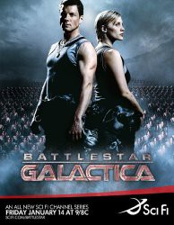

")
 
 IMDB-Wertung: 8.7 / 10
IMDB-Wertung: 8.7 / 10  Metascore:
Metascore: 
Nunmehr vierzig Jahre ist der Krieg gegen die Zylonen vorbei, und die Menschheit lebt in Frieden. Seit dem Ende des Krieges hat man die Zylonen nicht mehr gesehen, und der letzte der alten Kampfsterne, die Galactica, soll nun ausser Dienst gestellt und in ein Museum verwandelt werden. Doch die Zylonen kehren zurück, und in einem heimtückischen und brutalen Schlag zerstören sie die Heimatwelten der Menschheit.Die Galactica und eine Flotte verschiedener kleiner, teils unbewaffneter Raumschiffe sind nun der Rest einer grossen, fortschrittlichen Zivilisation. Die einzige Hoffnung der Überlebenden ist eine weit entfernte Kolonie, welche bisher als Mythos galt: Die Erde. Verfolgt von den Zylonen und auf sich allein gestellt macht sich der Treck auf zu diesem Planeten dessen Existenz nichteinmal sicher ist.
Jahr: 2004
Dauer: 45 Minuten
FSK: 12
Land: USA Studio: Sci-Fi Channel, TheTonspuren: DD2.0 - ,
Untertitel: Deutsch,
Auflösung: 720p (1280x720) Größe: 1402 MB
Genre: Action, Drama, Sci-Fi, Abenteuer, TV-Serie
Regisseur: Michael Rymer, Michael Nankin, Rod Hardy, Sergio Mimica-Gezzan, Robert M. Young,  Edward James Olmos, Jeff Woolnough, Wayne Rose, Allan Kroeker, Félix Enríquez Alcalá, Marita Grabiak, Brad Turner, Jonas Pate, Jean de Segonzac, Bill Eagles, James Head, Reynaldo Villalobos, Paul A. Edwards, Anthony Hemingway, John Dahl, Gwyneth Horder-Payton, Ronald D. Moore
Edward James Olmos, Jeff Woolnough, Wayne Rose, Allan Kroeker, Félix Enríquez Alcalá, Marita Grabiak, Brad Turner, Jonas Pate, Jean de Segonzac, Bill Eagles, James Head, Reynaldo Villalobos, Paul A. Edwards, Anthony Hemingway, John Dahl, Gwyneth Horder-Payton, Ronald D. Moore
Drehbuch: Georg Lippert
Soundtrack:
Darsteller:
 James Callis als Dr. Gaius Baltar
James Callis als Dr. Gaius Baltar Tahmoh Penikett als Captain Karl 'Helo' Agathon
Tahmoh Penikett als Captain Karl 'Helo' Agathon Alessandro Juliani als Lt. Felix Gaeta
Alessandro Juliani als Lt. Felix Gaeta Lucy Lawless als D'Anna Biers
Lucy Lawless als D'Anna Biers Lorena Gale als Elosha
Lorena Gale als Elosha Graham Beckel als Colonel Jack Fisk
Graham Beckel als Colonel Jack FiskDatei: X:\HD-Serien\Battlestar Galactica\S01\Battlestar.Galactica.S01E01.33.Minuten.German.DL.720p.BluRay.x264-DELiCiOUS.mkv seit 25.06.2016
Festplatte: HD Serien(A-H)
 Es gibt insgesamt 182 Filme in der Gruppe 'HD-Serien'
Es gibt insgesamt 182 Filme in der Gruppe 'HD-Serien'